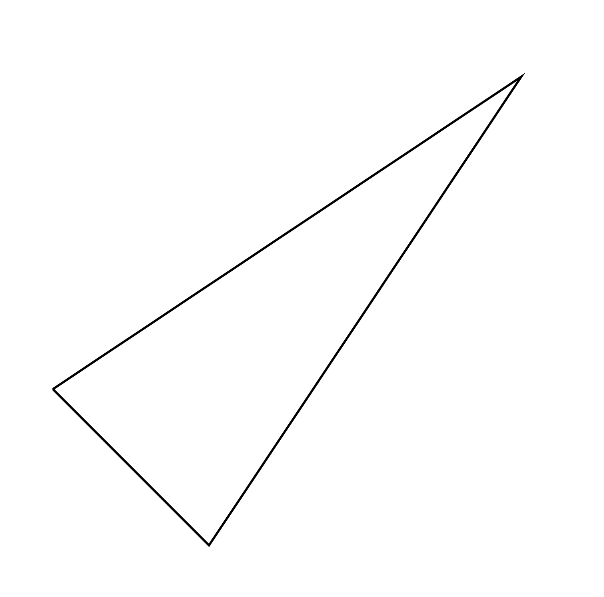
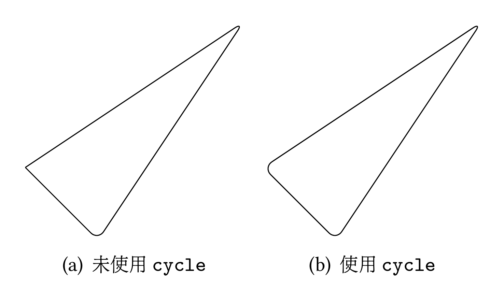
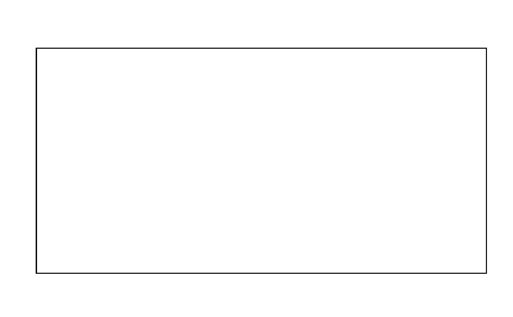
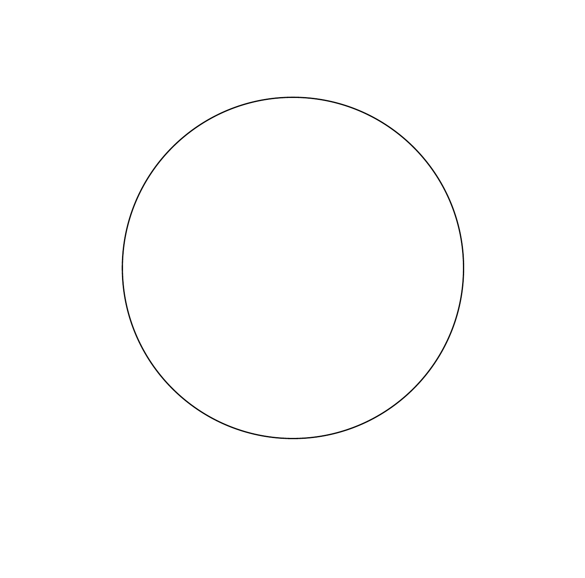
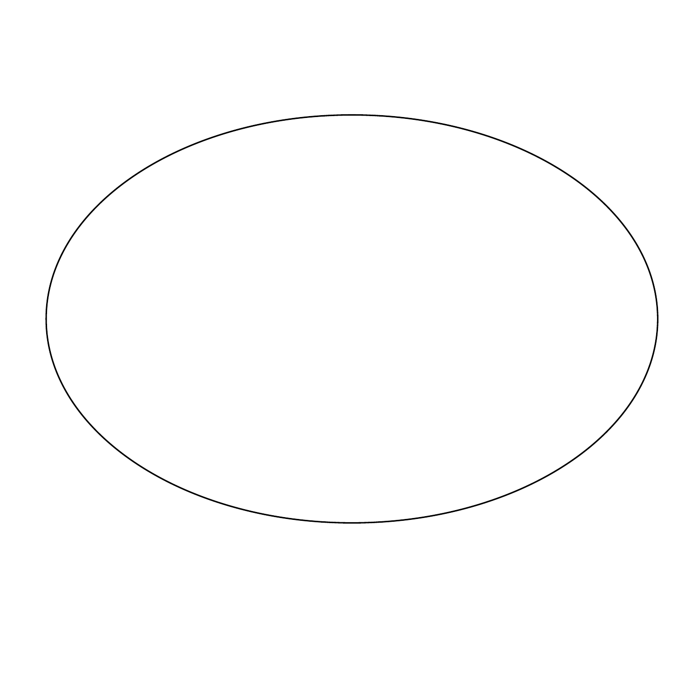
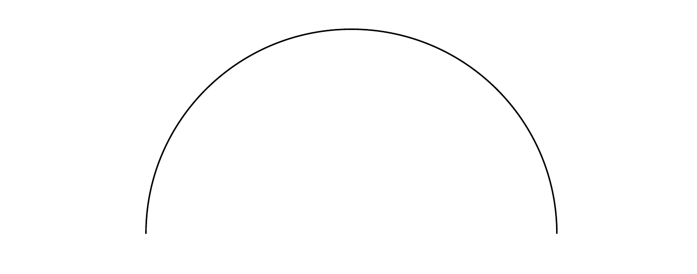
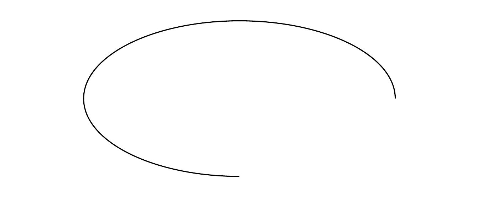
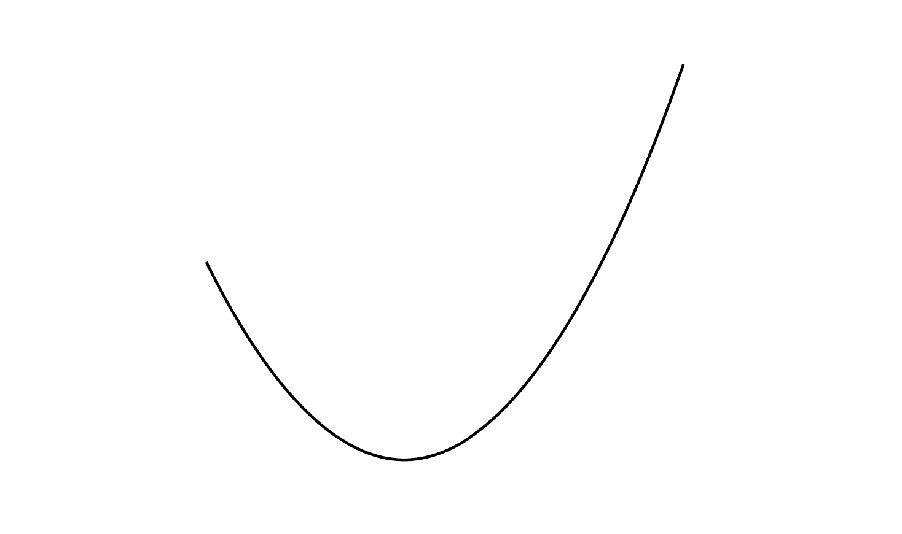

LaTeX 中的繪圖套件：TikZ I
TikZ是 LaTeX 中一個功能強大的圖形繪製套件，透過此套件可以創建圖形，包括流程圖、樹狀圖、網絡圖、函數圖、幾何圖形等。除了靜態圖形繪制，TikZ 還支持動態圖形和動畫，利用TikZ的動畫功能，通過逐幀地改變圖形元素的屬性和位置來創建互動式和動態的圖形效果。
在這篇文章中，我會先介紹 TikZ 的一些基本指令與觀念。下一篇文章則會著重於討論 TikZ 如何繪製經濟學與數學領域的圖形。
開始使用 TikZ
與一般引用套件的方式一樣，在前言區打上 \usepackage{tikz} 即可使用之。若需要進行一些計算工具，則使用 \usetikzlibrary{calc}。引用套件完畢後，在文件開始後，必須透過以下方式開啟繪製圖形的環境：
\usepackage{tikz}
\begin{document}
\begin{tikzpicture}
...
\end{tikzpicture}
\end{document}注意到在 TikZ 環境下的不同：每一行程式碼結尾必須使用分號（;），代表這段指令結束了，否則會編譯錯誤（類似C/C++/C#）。TikZ 之基本語法為\draw[option]...，其中 \draw 是對電腦下一個「繪圖」指令，[option]則是控制選項，可留白，而最後的 ... 則是操作命令，即宣告電腦幾何或是代數上的指令。使用者可以在前言區設定 TikZ 的樣式（全域），當然也可以在文稿區設定（區域）。
...
\tikzset{
Bline/.style ={color = blue, line width =2pt}
}
\begin{document}
...
\begin{tikzpicture}
\draw[Bline] (0,0) -- (9,0);
\end{tikzpicture}
...
\end{document}編譯結果如下：

基本圖形
接下來我們先著重在簡單的幾何圖形上，包含直線、封閉圖形，以及製作網格。
直線與封閉圖形
在 TikZ 中如果我們想要繪製直線，我們可以使用下方指令：
\begin{figure}[H]
\centering
\begin{tikzpicture}
\draw (0,0) -- (10, 0);
\end{tikzpicture}
\end{figure}我們就可以畫出在平面空間上連接 \(A(0,0)\) 與 \(B(10, 0)\) 兩點的直線1。注意到我們經常會將 TikZ 的圖片環境用 figure 環境包住，目的是為了能夠將製作出的圖形置中、對齊，但礙於篇幅，以下的程式碼將不會有 figure，但必須注意這是一個實用的技巧，對於排版美觀程度有很大的幫助。
我們都知道，形成一個除了圓、橢圓之外的封閉圖形至少需要三條線，在 TikZ 中亦是如此，我們可以連接四個點以形成三條直線，從而製作出一個三角形。
\begin{tikzpicture}
\draw (1,3)--(2,2)--(4,5)--(1,3);
\end{tikzpicture}
但這並非實際意義上的封閉圖形，因為我們僅把三個點用直線連接而已。正確的作法應該是在第三個點最後加上 --cycle，即：
\begin{tikzpicture}
\draw (1,3)--(2,2)--(4,5)--cycle;
\end{tikzpicture}我們加上圓角效果後便可發現兩者的差別，方法即是在 \draw 後面加上 [round corners]。

而矩形的畫法則是給定對頂點，兩者中間用 rectangle 表達要繪製矩形。
\begin{tikzpicture}
\draw(0, 0) rectangle (6,3);
\end{tikzpicture}
圓形、橢圓與弧
當使用TikZ繪製圖形時，可以使用相應的命令和參數來創建圓形、橢圓和弧。繪製圓形非常簡單，只需要給定圓心與半徑即可繪製，其中半徑可以指定單位，例如以下的範例便是指定圓心為 \((0, 0)\)，半徑為 \(1\) 公分的圓：
\begin{tikzpicture}
\draw (0,0) circle (2cm);
\end{tikzpicture}
在上述範例中，circle 命令用於繪製一個圓形。橢圓則是使用 ellipse，並在後面指定長軸與短軸。下方範例為長軸 \(6\) 公分，短軸 \(4\) 公分的橢圓。
\begin{tikzpicture}
\draw (0,0) ellipse (3cm and 2cm);
\end{tikzpicture}
而弧的繪製方法則是使用 arc，並指定弧度與半徑：
\begin{tikzpicture}
\draw (0,0) arc (0:180:2cm);
\end{tikzpicture}
上述範例繪製了一個從 \(0^{\circ}\) 到 \(180^{\circ}\) 且半徑為 2公分的圓弧。此外，我們也可以繪製橢圓弧，方法則是在指定弧度後再加上長軸與短軸：
\begin{tikzpicture}
\draw (0 ,0) arc (0:270:2 and 1);
\end{tikzpicture}
曲線
一般來說我們在繪製曲線時，使用的都是貝塞爾曲線(Bézier curve)的算法2。在 TikZ 中我們使用的方法是將上面繪製封閉圖形的 -- 代換成 ..即可。我們先來看範例：
\begin{tikzpicture}
\draw (5,1) parabola bend (6,0) (7.414 ,2);
\end{tikzpicture}
我們使用 parabola 指令代表我們要繪製拋物線，其中 bend 是告知電腦我們要指定頂點於 \((6, 0)\)。